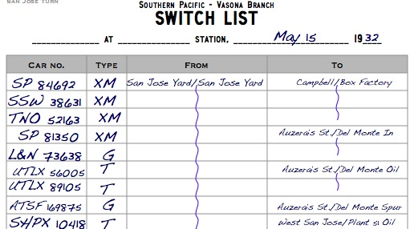
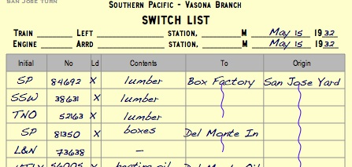
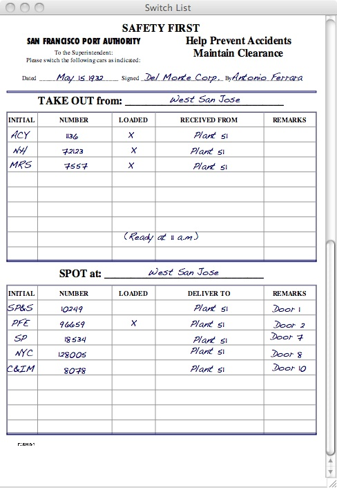

SwitchList can draw the switchlist you give your crews in several formats to match your preferences and prototype practice. You can select the preferred style in the Preferences dialog box.
Also check the links at the bottom for ways to customize these switchlists.
 I use the Handwritten switchlist on my own layout. New crews working in my somewhat dark garage found smaller type hard to read in the conditions, especially for individuals heading towards needing bifocals.
This switchlist uses a large typeface and removes all but the necessary fields - which car is moving, where the car is coming from, where it is going. Whether the car is loaded and the actual contents don't appear here.
The handwritten text and slight jitter in placement makes these look like they've actually been compiled by your favorite conductor or yard crew. If you're modeling the 1930's, this will be much more appropriate than something that looks typed or computer-printed.
 This switchlist is inspired by actual Southern Pacific switchlists. Like the Large Type switchlists, they look handwritten with jittery fonts. Make your crews think that you spent all night writing your switchlists by hand!
This switchlist explicitly lists the contents of each car, and places the origin to the right of the To field, just as on the prototype. See Bill Kaufman's article on the San Francisco State Belt Railroad in the July 2009 Railroad Model Craftsman for an example of a real switchlist.
My original switchlist, this one looks computer-generated and lists all the expected fields.
The "Work Order" format is based off the PICL-style reports used by most modern era (post-1980) railroad. PICL, or Perpetual Inventory of Car Locations, refers to a computer software program that lists the standing of cars in order on each track.
These reports show the current status of each car at a given location,
track or industry. Load Status, Blocking Instructions as well as
Commodity are common fields found on these reports. Train crews use
these reports to plan their work, then report back to the train clerks
who update the PICL Inventory in a never-ending fashion.
The "Work Order" format shows the cars that the train will interact
with at each station stop along its route. From left to right, the
fields are:
Reporting Marks
Load or Empty (LE) Status
Blocking Instructions (Industry and Town)
Car Type or "Kind of Car" (KD)
Commodity
The layout date and current time are appended to the end of the report. This style is best used on any modern era (post-1980) layout.
Since this format is based off computer-generated forms, character limits do apply. Car reporting marks are expected to be 11 characters or smaller; industry names less than 21 characters; town names less than 21 characters; car types, two characters; and cargo descriptions: 15 characters. Using names longer than these spaces can throw off the formatting on a report.
 The Southern Pacific Belt Railroad used an unusual set of paperwork for transferring cars from the city's piers to the different railroads serving San Francisco. Each business would file a Form B-7 with the railroad describing the cars to be switched from one of the major railroad's yards to the piers, and cars to be taken from the piers to the yards. The Belt Railroad's crews would take these forms as they switched each pier or industry. Bill Kaufman goes into detail on the Form B-7 in his article in the July 2009 Railroad Model Craftsman magazine.
SwitchList's B-7 form imitates the Belt Railroad's paperwork. Using this switchlist style in SwitchList requires your layout to be set up in a specific way. Each town on the railroad should represent a large major industry. SwitchList will generate a separate B-7 for each industry/town, and list the cars to be taken to and removed from each industry. SwitchList will print one form for each town that a train stops at.
Cars being taken from the yard to the town/industry appear in the "SPOT AT" section; cars being taken from the industry back to the yard appear in the "TAKE OUT" section. If a car needs to be respotted to another industry/track in the same town or in another town, a note will appear in the "notes" section.
SwitchList assumes that cars are being taken from and returned to the yard where the train starts. The Form B-7 may be unrealistic if your train stops at intermediate yards.
{kind=link}
{kind=link}
{kind=link}
{kind=link}